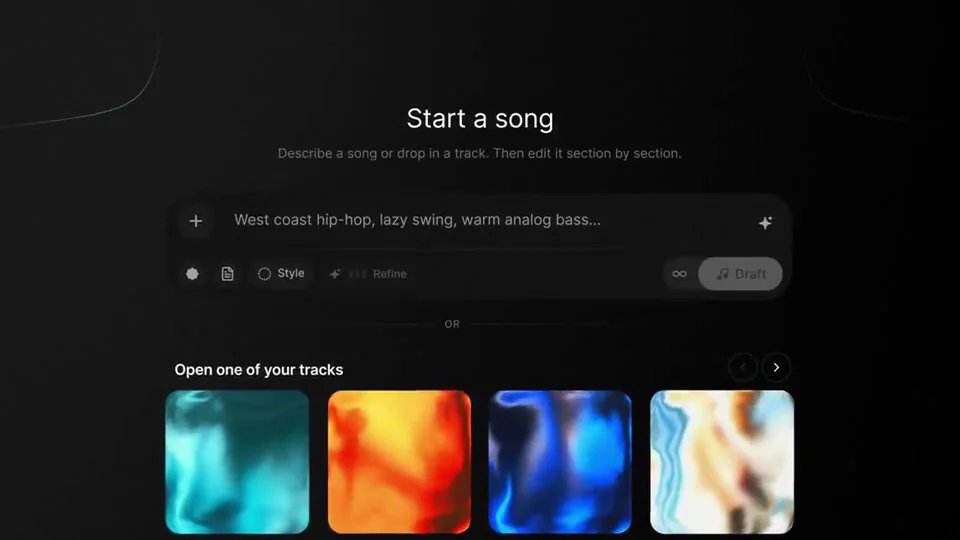
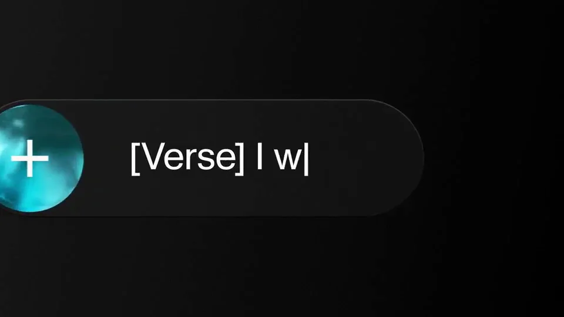
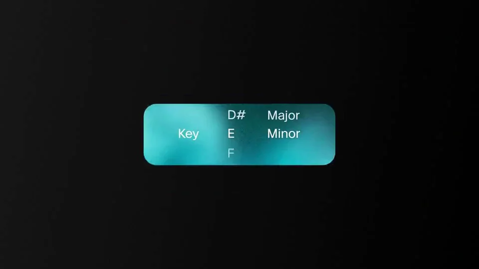
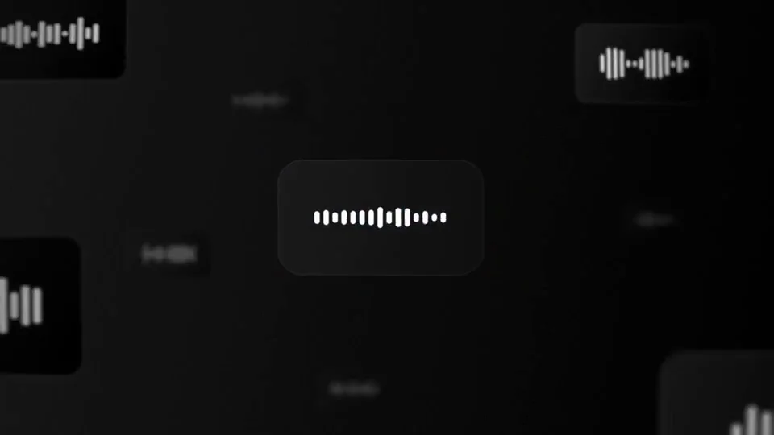
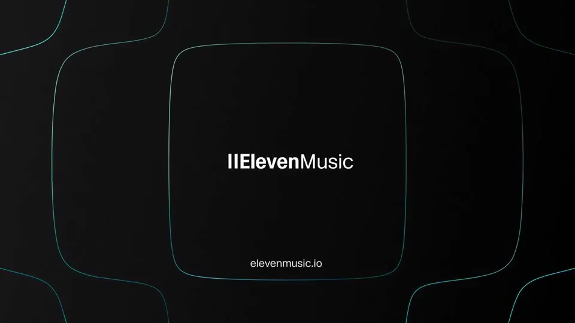

ElevenLabs / V059
Composer · 分段歌曲编辑
把歌曲创作讲成可逐项控制的过程：先输入方向，再安排段落和歌词，调整速度与调性，最后进入试听与作品集合。
构图与编排 可播放 · 可替换内容
整体编排规则示例
查看 HTML 源码
<!doctype html><html lang="zh-CN"><meta charset="utf-8"><meta name="viewport" content="width=device-width,initial-scale=1"><title>Introducing Composer, a section-by-section song editor.
Start with your own lyrics or track, a blank page, or a prompt, · sequence</title><style>html,body{margin:0;width:100%;height:100%;overflow:hidden;background:#071a1d}canvas{display:block;width:100%;height:100%;object-fit:contain}</style><body data-mode="sequence"><canvas width="1000" height="600"></canvas><script src="data.js"></script><script src="common.js"></script><script src="scene.js"></script><script src="bridge.js"></script></body></html>画面元素提示条参考封面段落标签歌词BPM数字调性选择波形作品队列
MOTION LANGUAGE
动作与构图
局部动作 · 构图规则
01
从开放请求进入具体控制
提示框先写创作意图，参考封面或素材随后进入。接着将 Verse、Chorus、Bridge 等段落拆成独立块，让歌词落到对应段落，而不是把整首歌堆成一段文字。
02
速度与调性各有固定位置
速度与调性各有固定位置规则示例
查看 HTML 源码
<!doctype html><html lang="zh-CN"><meta charset="utf-8"><meta name="viewport" content="width=device-width,initial-scale=1"><title>Introducing Composer, a section-by-section song editor.
Start with your own lyrics or track, a blank page, or a prompt, · sequence</title><style>html,body{margin:0;width:100%;height:100%;overflow:hidden;background:#071a1d}canvas{display:block;width:100%;height:100%;object-fit:contain}</style><body data-mode="clip" data-start="18" data-end="32"><canvas width="1000" height="600"></canvas><script src="data.js"></script><script src="common.js"></script><script src="scene.js"></script><script src="bridge.js"></script></body></html>BPM 数字在同一个位置变化，调性在选择器中切换。调整参数时，其他控制保持稳定，让观众知道改变的是哪一项。
深青背景、青绿色重点与柔和流体形成音乐氛围；歌词用常规无衬线字体，段落标签与参数名略粗，数字保持对齐。
03
波形负责播放，作品卡负责选择
结果出现后用播放线穿过波形表达试听进度，封面与名称保持可辨。多作品阶段将单卡展开成队列，保留同一组播放器元素。
波形可作为节奏图形，但需要真实音轨时应让播放线与声音同步；不要让装饰性的跳动掩盖歌词与参数。
04
换音乐方向时保留控制结构
替换创作提示、参考图、歌词与封面，重新选择速度和调性。可以改变背景材质和主色，保留输入、结构、参数、试听四种操作层级。
SEQUENCE
段落与节奏
点击段落，定位到上方编排示意。





画面参考 · 离散静帧
KEEP THE RELATIONSHIPS
制作其他主题
- 迁移到创作型工具时保留输入→结构→参数→成果链
- 波形是音频存在的视觉符号，需另附真实音轨才能验证音画关系
制作约束
提示条 / 参考封面 / 段落标签 / 歌词 / BPM数字 / 调性选择 / 波形 / 作品队列
- 从开放式请求进入可控制的段落、速度、调性，最后落到波形与作品
- 参数选择是因、输出变化是果，不能先输出再补输入
- 深青流体背景持续低频运动，工具卡片承担清晰阅读